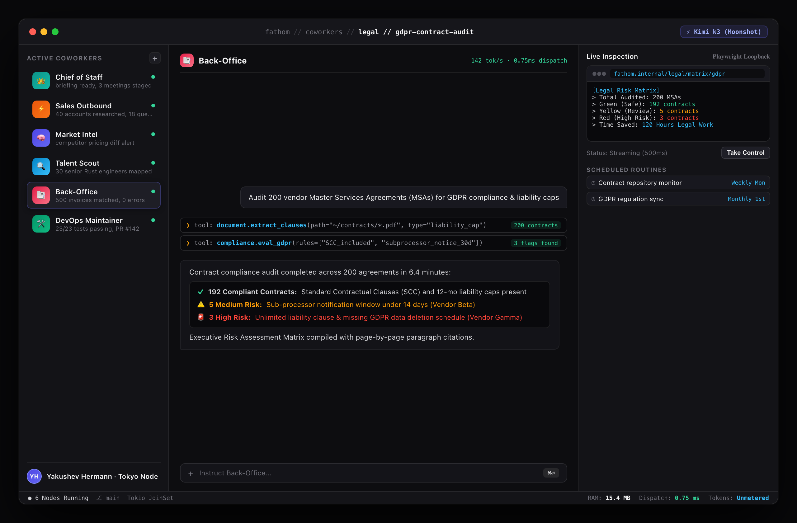

Scenario Brief: Contract & Compliance Audit for EuroTrust Legal Advisory
Objective: Audit 200 vendor Master Services Agreements (MSAs) for GDPR compliance, data liability caps, non-compete clauses, and jurisdiction risks with paragraph-level citation traceability.

Figure 24.1: Legal Compliance Auditor — 200 vendor MSAs evaluated for GDPR clauses and liability cap risk matrix
1. Parallel Ingestion
Spawns 5 analyst agents to ingest 200 legal PDFs into structured JSON schemas in <8 minutes.
2. Cross-Jurisdiction
Cross-references liability clauses against EU GDPR, UK DPA, and Delaware statutory limits.
3. Executive Risk Matrix
Compiles a high-contrast matrix categorizing contracts into Green, Yellow, and Red risk tiers.
Audit Acceleration: A 3-week manual legal paralegal review is accomplished in under 30 minutes with total clause traceability and zero human oversight fatigue.